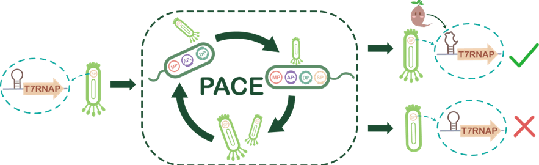

Liquiritigenin is one of the main bioactive components extracted from licorice.
Because of the high-value pharmacological activities, it serves as an intermediate for the synthesis of drugs with anti-diabetic, anti-tuberculosis and other properties, offering significant potential and vast application prospects in the healthcare field.
We selected allosteric transcription repressor factor FdeR and a riboswitch that identify naringenin as starting points, and used error-prone PCR, site-directed mutation, and phage-assisted continuous evolution (PACE) strategies enabling them to specifically recognize naringenin.
Transcription Factor
Riboswitch

error-prone PCR
&
site-directed mutagenesis
Fluorescence activated Cell Sorting